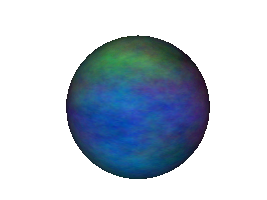

Panda3D Manual: Texture smiley noise.png
{kind=link}
{kind=link}
{kind=link}

{kind=link}
No higher resolution available.
Texture_smiley_noise.png (267 × 200 pixels, file size: 42 KB, MIME type: image/png)
Smiley with noise.rgb applied
This image was generated with the following program:
from direct.directbase.DirectStart import *
from pandac.PandaModules import *
base.setBackgroundColor(1, 1, 1, 1)
smiley = loader.loadModel('smiley.egg')
smiley.reparentTo(render)
dl = DirectionalLight('dl')
dlnp = base.camera.attachNewNode(dl)
smiley.setLight(dlnp)
tex = loader.loadTexture('maps/noise.rgb')
smiley.setTexture(tex, 1)
base.disableMouse()
camera.setPos(1, -5, 1)
camera.setHpr(12, -10, 0)
base.graphicsEngine.renderFrame()
base.screenshot('texture_smiley_noise.png', defaultFilename = 0)
|
File history
Click on a date/time to view the file as it appeared at that time.
| Date/Time | Thumbnail | Dimensions | User | Comment | |
|---|---|---|---|---|---|
| current | 17:43, 4 October 2005 | 267 × 200 (42 KB) | Drwr (Talk | contribs) | ||
| 16:11, 4 October 2005 |  | 400 × 300 (68 KB) | Drwr (Talk | contribs) | Smiley with noise.rgb applied |
- Edit this file using an external application (See the setup instructions for more information)
{kind=link}
File usage
The following page links to this file:
| Back to the Manual |
© Carnegie Mellon University 2010